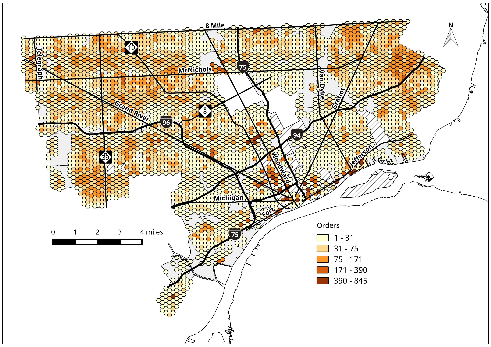

Tue 04 October 2016 | tags: evictions, displacment, -- (permalink)
In this notebook, I will show what the landlord-tenant data from Michigan's 36th district court, where Detroit is located, looks like.
In the cell below, I collect and print the first 15 rows from the raw landlord-tenant data for 01/01/2009 through 12/31/2011.
dataFile = "/home/eric/detroit_research_projects/data/LT/Filing_From_010109_-_123111.txt"
with open(dataFile) as myfile:
head = [next(myfile) for x in xrange(16)]
for h in head:
print h
RUN DATE: 03/17/16 10:14AM 36TH DISTRICT COURT PAGE 1
421 MADISON AVENUE
DETROIT MI 48226
MATTHEW REPORT 2/16/16 FILINGS
Case Type LT SP File Date 10109-123111
NAME CASE NUMBER FILE DATE CLOSE DATE
I01: 38500 N WOODWARD AVE BLOOMFIELD MI 48013
JOHN HANCOCK LI 08339157 6/24/09 7/24/09
P01: 25574 KILREIGH FARMINGTON HILLS MI 48336
WILLIAMS/COREY/ 09300000 1/02/09
D01: 18942 ASHTON DETROIT MI 48223
LOWRY/HOWARD/ 09300000 1/02/09 1/12/09
D02: 18942 ASHTON DETROIT MI 48223
LOWRY/YOWANDA/ 09300000 1/02/09 1/12/09
P01: 1342 FAIRHOLME GROSSE PTE WOODS MI 48236
PATERNA/SALVATO 09300002 1/02/09
These data are not in a database-ready format. What we can tell from this printout is that "P01" precedes the name of the first plaintiff, "D01" precedes the name of the first defendant, and "D02" represents the name of the second defendant. For any plaintiff or defendant, there are two lines containing data. The first row has the address and the second row has the name of plaintiff or defendant, the order number for the court action, and the date of the action. Because the relationship between plaintiff and defendant is one-to-many, I need to create separate tables for defendants and plaintiffs. I can then use the order number common between plaintiffs and defendants to relate plaintiffs to defendants for a particular action.
In order to parse this data, I will use Python's regular expression library. Regular expressions are strings consisting of special characters that can be used to find matching patterns in text. Regular expressions allow one to query text for subsrings using specialized, but flexible sets of rules.
import re
I will first try to collect all the data for plaintiffs. I will iterate through the records and find all records starting with "P01". There is only ever one plaintiff listed per action.
iterobj = iter(head) # make
for i, line in enumerate(iterobj):
if line.startswith("P01"):
print line
P01: 25574 KILREIGH FARMINGTON HILLS MI 48336
P01: 1342 FAIRHOLME GROSSE PTE WOODS MI 48236
Now I need to get the data from the line following the line starting with "P01"
iterobj = iter(head) # make
for i, line in enumerate(iterobj):
if line.startswith("P01"):
try:
line = line.strip("\n").strip("\r")
next_line = next(iterobj).strip("\n").strip("\r")
print "*"*75
print line
print next_line
except:
pass
***************************************************************************
P01: 25574 KILREIGH FARMINGTON HILLS MI 48336
WILLIAMS/COREY/ 09300000 1/02/09
***************************************************************************
P01: 1342 FAIRHOLME GROSSE PTE WOODS MI 48236
PATERNA/SALVATO 09300002 1/02/09
Now I need to pick out the individual pieces of data from each line so that they can be inserted into the relevant database columns. To parse the address, I will
iterobj = iter(head) # make
for i, line in enumerate(iterobj):
if line.startswith("P01"):
try:
line = line.strip("\n").strip("\r")
next_line = next(iterobj).strip("\n").strip("\r")
print "*"*75
# regex to extract street number and name
# capture substring btw space following colon after plaintiff number, i.e, "P01"
# through a substring of 2 consecutive spaces
m = re.search(r':*\s+([\dP].*?)(?:\s{2}|#|$)', line)
if m:
address = m.group(1)
print "street address: {}".format(address)
except:
pass
***************************************************************************
street address: 25574 KILREIGH
***************************************************************************
street address: 1342 FAIRHOLME
Now I will parse for city, state, and the plaintiffs's name, where each are available.
iterobj = iter(head) # make
for i, line in enumerate(iterobj):
if line.startswith("P01"):
try:
line = line.strip("\n").strip("\r")
next_line = next(iterobj).strip("\n").strip("\r")
print "*"*75
# regex to extract street number and name
# capture substring btw space following colon after plaintiff number
# through a substring of 2 consecutive spaces
m = re.search(r':[\sLF]*\s+([\dP].*?)(?:\s{2}|#|$)', line)
if m:
address = m.group(1)
# capture 'word' substring between first 2+ space gap and second 2+ space gap
m = re.search('\s{2}([\w].*?)\s{2}', line)
if m:
city = m.group(1)
# capture 'word' substring between 2nd 2+ space gap and zip code, i.e., 5 digit substring
m = re.search('\s{2}.*\s{2}([\w].*?)\s\d{5}', line)
if m:
state = m.group(1)
if state is None:
m = re.search('\s{2}.*\s{2}([\w]{2})$', line)
if m:
state = m.group(1)
if state is not None:
state = state.strip()
m = re.search('([\w\s/]+)\s(\d{8})\s', next_line)
# capture 'word' substring preceding the court order number
if m:
name = m.group(1).replace("/", " ").strip()
print "street address: {}".format(address)
print "city: {}".format(city)
print "state: {}".format(state)
print "plaintiff name: {}".format(name)
except:
pass
***************************************************************************
street address: 25574 KILREIGH
city: FARMINGTON HILLS
state: MI
plaintiff name: WILLIAMS COREY
***************************************************************************
street address: 1342 FAIRHOLME
city: GROSSE PTE WOODS
state: MI
plaintiff name: PATERNA SALVATO
Now I have parsed the data and I can insert these records into a research database. To parse the defendant records, I follow a similar process. In short, I create a row with data for every defendant and plaintiff in the data. To see what the results look like, I will make some basic queries of the final database. I use SQLite, a server-less, file-based relational database for this work.
import sqlite3 as sql
db = "/home/eric/detroit_research_projects/data/derived_data/lt_points.sqlite"
# retrieve first five rows from plaintiffs table
con = sql.connect(db)
cur = con.cursor()
cur.execute('''
SELECT plaintiff_number, address, city, state, zip, name, order_number
FROM plaintiffs LIMIT 5;
''')
results = cur.fetchall()
con.close()
for row in results:
print row
(u'P01', u'13526 NORFOLK', u'DETROIT', u'MI', u'48235', u'BLACKSTONE COOP', u'12300000')
(u'P01', u'13526 NORFOLK', u'DETROIT', u'MI', u'48235', u'BLACKSTONE COOP', u'12300001')
(u'P01', u'13526 NORFOLK', u'DETROIT', u'MI', u'48235', u'BLACKSTONE COOP', u'12300002')
(u'P01', u'13526 NORFOLK', u'DETROIT', u'MI', u'48235', u'BLACKSTONE COOP', u'12300003')
(u'P01', u'13526 NORFOLK', u'DETROIT', u'MI', u'48235', u'BLACKSTONE COOP', u'12300004')
# retrieve first five rows from defendants table
con = sql.connect(db)
cur = con.cursor()
cur.execute('''
SELECT defendant_number, address, city, name, order_number
FROM defendants LIMIT 5;
''')
results = cur.fetchall()
con.close()
for row in results:
print row
(u'D01', u'20470 CHEYENNE', u'DETROIT', u'ARNOLD CHARLES', u'12300000')
(u'D01', u'13221 W EIGHT MILE', u'DETROIT', u'MURRAY GAIL', u'12300001')
(u'D01', u'13304 N NORFOLK', u'DETROIT', u'SHABAZZ LATEEFA', u'12300002')
(u'D01', u'13280 N NORFOLK', u'DETROIT', u'MCKINNEY GREGOR', u'12300003')
(u'D01', u'13266 N NORFOLK', u'DETROIT', u'ALFRED ETHEL', u'12300004')
# show linked plaintiff and defendant records joined on order number
# for records shown in the raw data at the top of this notebook
con = sql.connect(db)
cur = con.cursor()
cur.execute('''
SELECT A.plaintiff_number, A.name, B.defendant_number, B.name, B.address, B.city
FROM plaintiffs AS A JOIN defendants AS B ON A.order_number = B.order_number
WHERE A.order_number = "09300000";
''')
results = cur.fetchall()
con.close()
for row in results:
print row
(u'P01', u'WILLIAMS COREY', u'D01', u'LOWRY HOWARD', u'18942 ASHTON', u'DETROIT')
(u'P01', u'WILLIAMS COREY', u'D02', u'LOWRY YOWANDA', u'18942 ASHTON', u'DETROIT')
# how many eviction orders per year?
# take the first four characters from the date field for the year, then group by that substring
# put data into pandas DataFrame object
import pandas as pd
con = sql.connect(db)
qry = ('''
SELECT SUBSTR(open, 1, 4) AS year, COUNT(DISTINCT order_number) AS orders
FROM plaintiffs
WHERE open IS NOT NULL
GROUP BY SUBSTR(open, 1, 4);
''')
df = pd.read_sql(qry, con)
con.close()
print df
year orders
0 2009 34814
1 2010 32645
2 2011 34127
3 2012 33134
4 2013 25701
5 2014 10049
6 2015 10884
7 2016 1467
Now let us see where landlord-tenant actions are spatially concentrated.
from IPython.display import Image
Image(filename="images/ltmap.png", width="650")

I have embedded a map of the location of landlord-tenant actions. These data are not normalized, but I show the number located within regular hexagonal bins to make it easier to read than a map of the points themselves. These actions are located everywhere, but concentrated in places with multi-unit housing.